gobj <- seuratToGiottoV5(sp, spatial_assay = 'Visium10X')
# Need to re-scale the data after transformation into giotto object
gobj <- normalizeGiotto(gobj)Downstream Analyses
Objectives 🎯
- Identification of spatially-coordinated genes
- Identification of spatial domains
- Ligand-receptor inference analysis with
CellChat
Overview
Now you will start to explore ways to use spatial information to gather conclusions from our sample. You might be thinking of questions like:
- Are there genes that display a specific pattern of expression?
- Are my clusters more or less spatially organized? Can we include spatial information while clustering spots?
- What about cell-cell interactions across spots? Are there ways to check them out in spatial data?
You’ll see in this part that most of these questions are readily answered after a few steps given our properly built dataset!
Spatially-variable genes with Giotto
As we have seen during the introduction, geographical data analysis approaches have been around for decades in the fields of economics and ecology. Ever since spatial profiling technologies were developed, researchers have re-purposed these mathematical approaches to study biological phenomena! One of the first applications initially developed for smFISH data was to check whether genes/probes displayed a more or less spatially organized pattern in a statistically relevant manner. The Giotto package takes advantage of these methods to detect spatially-variable genes in ST data.
Before that tough, we need a few setup steps. We first convert our SeuratObject into one which is compatible with the functionalities of Giotto. This is performed with a convenience function as shown below:
💡 Just write
gobjin your console to inspect theGiottoobject, everything we had before should be there!
Then, we need to represent connections between spots in a way that the computer can understand, this is performed via networks. Think of them as ways to store connection between cells. Use the code below to create a k-Nearest Neighbor graph where each spot will be connected to its k sorrounding neighbors.
# create spatial network
gobj <- createSpatialNetwork(gobject = gobj,
method = "kNN",
k = 6,
maximum_distance_knn = 300,
name = "spatial_network")There are many ways to create spatial networks and the k-NN algorithm is only one of them, others include radius-based approaches and the Delaunay triangulation. Once we have created the network, we inspect it trying to see whether connections between spots make sense biologically! (i.e. we are not connecting far away spots unlikely to interact with wach other)
# Plot spatial network
spatPlot2D(gobject = gobj,
show_network= TRUE,
network_color = "blue",
point_size = 1,
spatial_network_name = "spatial_network")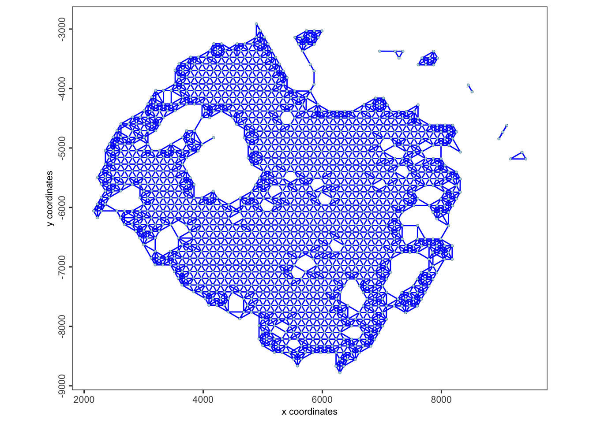
We can now go ahead and detect spatially-variable genes in the data. Giotto implements this functionality with a function called binSpect, which is based on gene expression binarization and k-means clustering. The method tries to identify genes which are either expressed or not in nearby cells connected in the network.
# Spatially variable genes detection
ranktest <- binSpect(gobj,
bin_method = "rank",
calc_hub = TRUE,
subset_feats = VariableFeatures(sp),
hub_min_int = 5,
spatial_network_name = "spatial_network")Q1. Inspect the resulting object, what are the top 3 most spatially variable genes?
Q2. Plot them on the sample like shown below (hint: use the spatFeatPlot2D function)
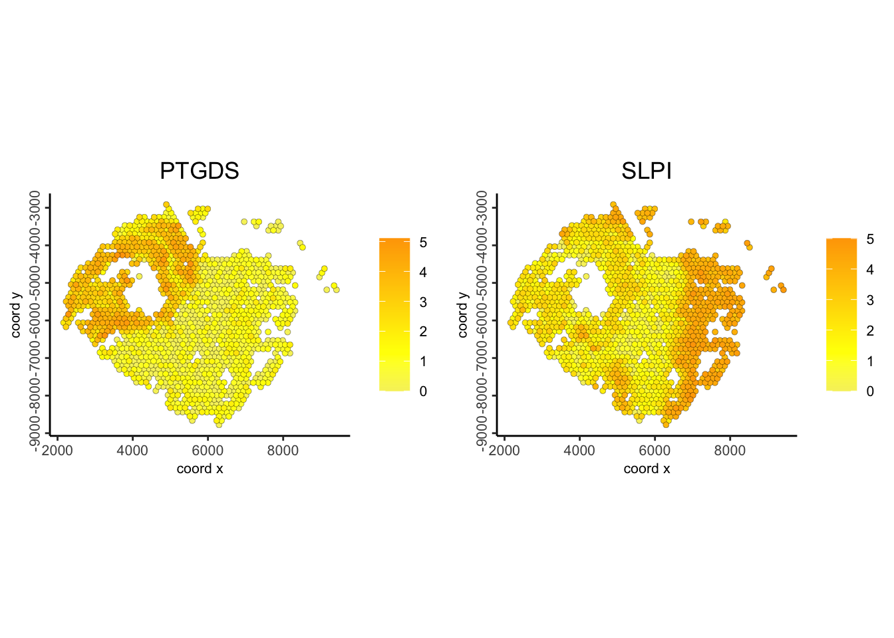

Check out spatial modules of expression
Another functionality of Giotto entails the discovery of modules of genes displaying coordinated and coherent expression patterns, these can be thought to encode a spatially coordinated biological function. As this is a computationally-intensive process, we restrict the search of modules to include the top 250 spatially-variable genes like shown below:
# Cluster the top 500 spatially variable genes into modules
ext_spatial_genes <- ranktest[1:250,]$featsWith the function below, we are computing which genes are more likely to compose modules by checking their cross-correlation profile.
# Compute gene-gene spatial correlation
spat_cor_netw_DT <- detectSpatialCorFeats(
gobj,
method = "network",
spatial_network_name = "spatial_network",
subset_feats = ext_spatial_genes)We then cluster the features into 5 modules, this is an arbitrary choice and can be dependent on the nature of the analysis.
spat_cor_netw_DT <- clusterSpatialCorFeats(spat_cor_netw_DT,
name = "spat_netw_clus",
k = 5)Plot the clusters!
heatmSpatialCorFeats(gobj,
spatCorObject = spat_cor_netw_DT,
use_clus_name = "spat_netw_clus",
heatmap_legend_param = list(title = NULL))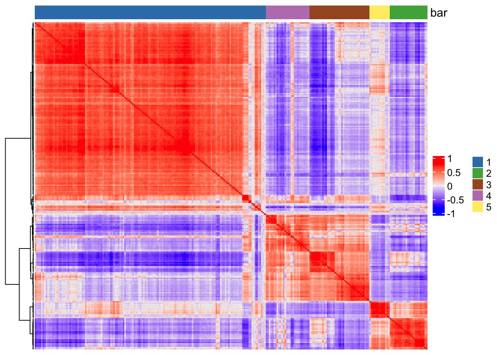
We can additionally summarize the activity of spatial modules into metascores at single spot level, this is equivalent to calculating a signature score at the single-spot level starting from th e lists of genes composing the modules. We expect to see a spatial patterning in the data. We can additionally plot a figure to check out how many genes there are per module and how much they are intercorrelated!
# Rank clusters (also plots cluster size vs rank dotplot)
netw_ranks <- rankSpatialCorGroups(
gobj,
spatCorObject = spat_cor_netw_DT,
use_clus_name = "spat_netw_clus")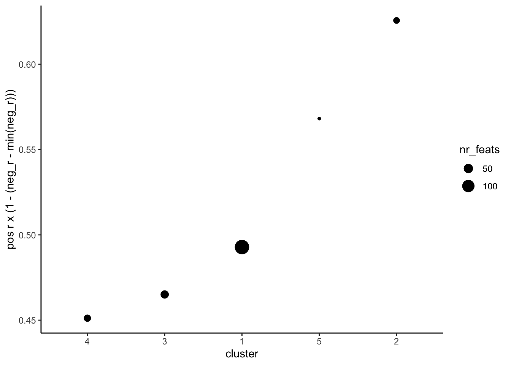
cluster_genes_DT <- showSpatialCorFeats(spat_cor_netw_DT,
use_clus_name = "spat_netw_clus",
show_top_feats = 1)
# Get gene-clusters associations
cluster_genes <- cluster_genes_DT$clus
names(cluster_genes) <- cluster_genes_DT$feat_ID
# Create metagenes based on modules
gobj <- createMetafeats(gobj,
feat_clusters = cluster_genes,
name = "cluster_metagene")- Plot metafeatures like shown below (hint: use the
spatCellPlotfunction from theGiottopackage but specifynetw_ranks$clustersin thecell_annotation_valueoption)
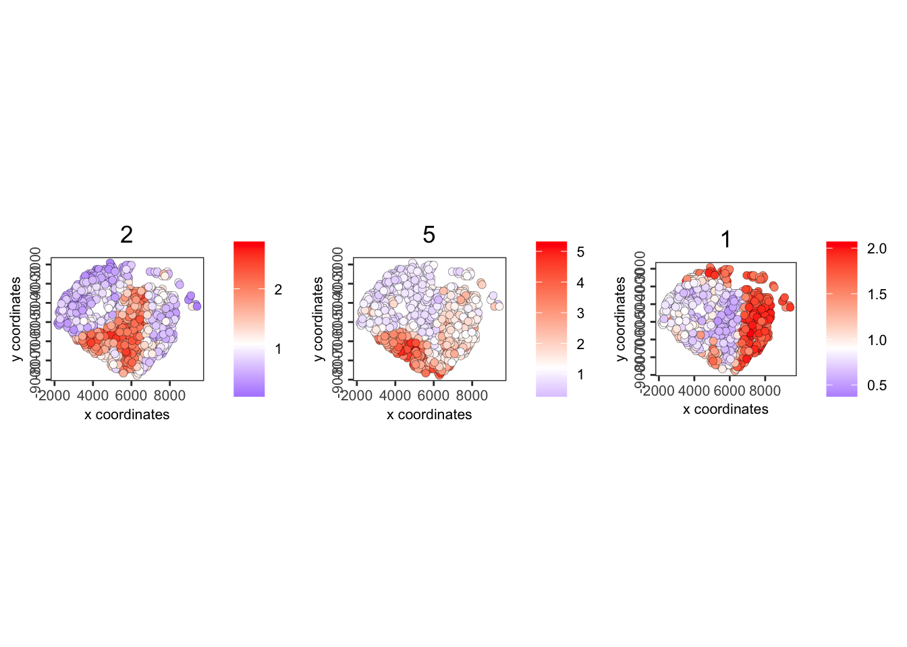
We can also compute a set of the 30 top-expressed genes per module to then use to subset out sample and perform spatially-informed clustering!
# Get a list of the top 30 co-expressed genes per cluster - hide this and have them work it out
coexpr_dt <- data.table::data.table(
genes = names(spat_cor_netw_DT$cor_clusters$spat_netw_clus),
cluster = spat_cor_netw_DT$cor_clusters$spat_netw_clus)
data.table::setorder(coexpr_dt, cluster)
top30_coexpr_dt <- coexpr_dt[, head(.SD, 30) , by = cluster]
spatial_genes <- top30_coexpr_dt$genesQ3 Which are the top 3 genes for each spatial co-expression cluster?
Spatial domain identification with spatially-informed clustering
Now that we have a set of genes that we know display spatial patterns of expression, we can use these to group together cells with clustering like we have previously done. In this case, the results that we obtain will intrinsically retain spatial information, meaning that we can identify spatially-guided results. We therefore start from the spatial genes to calculate again the principal components, umap, network and clustering!
# Perform PCA on features from spatially-variable genes
sp <- Seurat::RunPCA(sp,
features = spatial_genes,
reduction.name = "custom_pca",
)
# Re-compute UMAP embedding
sp <- Seurat::FindNeighbors(sp, reduction='custom_pca', graph.name='custom_NN')
#sp <- Seurat::RunUMAP(sp, graph='custom_NN', reduction.name='custom_UMAP')
# Cluster spots based on PCA neighbors from spatially-variable genes
sp <- Seurat::FindClusters(sp,
graph.name = "custom_NN",
cluster.name = "custom_clusters")Modularity Optimizer version 1.3.0 by Ludo Waltman and Nees Jan van Eck
Number of nodes: 1339
Number of edges: 12730
Running Louvain algorithm...
Maximum modularity in 10 random starts: 0.7970
Number of communities: 9
Elapsed time: 0 secondsQ4. Display the resulting spatial domains you obtained (hint: try using the SpatialDimPlot function with the custom_leiden metadata field)
Q5. Calculate the results of the previous clusters with the clustering obtained now, how much is each previous cluster contained in the new ones?
Q6. Display cell type proportions across the identified domains using a heatmap (hint: see the pheatmap package)
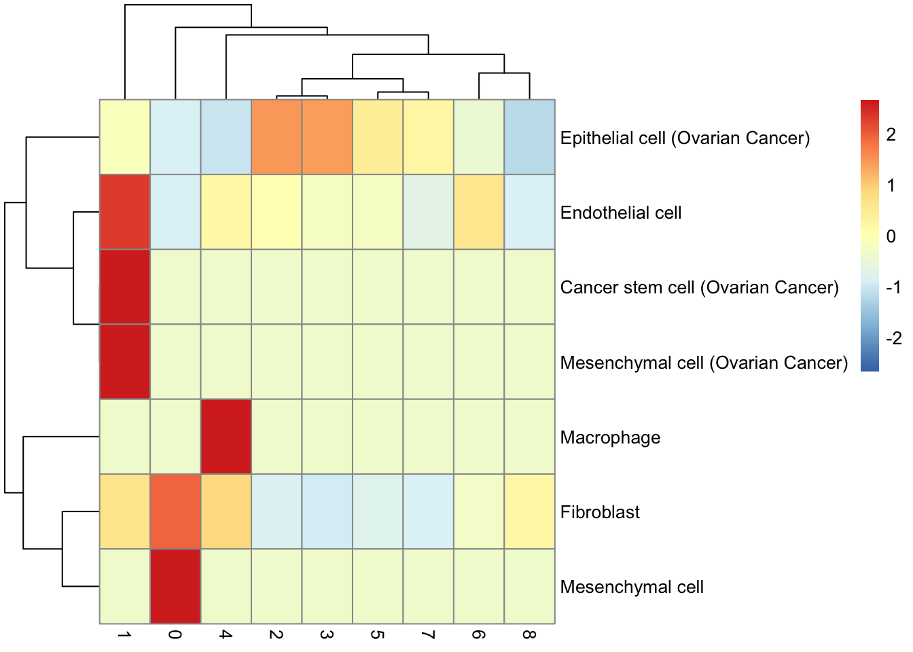
Ligand-receptor activity inference with CellChat
Ever since the widespread generation of scRNA-seq data, computational methods to infer cell-cell interaction events (CCI) have been developed based on co-expression of ligand- and receptor-encoding genes across clusters. Spatial techonologies deepen this analysis by giving us the chance to weight the inferred interaction by their actual spatial proximity, limiting the chance of identifying false positive results.
The method that we will exploit in this part of the workshop is packaged into the CellChat framework.
We first take the original SeuratObject and create a CellChat object with its own class. We first isolate raw data and import scale factors since CellChat takes into account spatial information, check out the steps below:
# Get normalized data matrix
data.input = Seurat::GetAssayData(sp, slot = "data", assay = "Visium10X")
# Source scale factors for um to px conversion
# Of note, the 'spot_diameter_fullres' factor is different from the `spot` in Seurat object and thus users still need to get the value from the original json file.
scalefactors = jsonlite::fromJSON(txt = file.path("./data/spatial", 'scalefactors_json.json'))
# manually create a dataframe consisting of the cell labels, make sure to avoid 0 in the labels, so we create another column
meta = data.frame(orig.labels = Idents(sp), samples = "sample1", row.names = names(Idents(sp))) %>% mutate(labels = paste0('cluster-',orig.labels))
meta$samples <- factor(meta$samples)
unique(meta$labels) # check the cell labels[1] "cluster-3" "cluster-1" "cluster-4" "cluster-5" "cluster-8" "cluster-0"
[7] "cluster-6" "cluster-7" "cluster-2"spatial.locs = GetTissueCoordinates(sp, scale = NULL, cols = c("imagerow", "imagecol"))[,c('x','y')] %>% as.matrix()
spot.size = 65 # the theoretical spot size (um) in 10X Visium
conversion.factor = spot.size/scalefactors$spot_diameter_fullres
spatial.factors = data.frame(ratio = conversion.factor, tol = spot.size/2)
d.spatial <- computeCellDistance(coordinates = spatial.locs, ratio = spatial.factors$ratio, tol = spatial.factors$tol)
min(d.spatial[d.spatial!=0]) # this value should approximately equal 100um for 10X Visium data[1] 99.57156Now create the CellChat object and store it in the cellchat variable:
# Create CellChat object
cellchat <- createCellChat(object = data.input, meta = meta, group.by = "labels",
datatype = "spatial", coordinates = spatial.locs, spatial.factors = spatial.factors)[1] "Create a CellChat object from a data matrix"
Create a CellChat object from spatial transcriptomics data...
Set cell identities for the new CellChat object
The cell groups used for CellChat analysis are cluster-0, cluster-1, cluster-2, cluster-3, cluster-4, cluster-5, cluster-6, cluster-7, cluster-8 # Let's see it
cellchatAn object of class CellChat created from a single dataset
33538 genes.
1339 cells.
CellChat analysis of spatial data! The input spatial locations are
x_cent y_cent
AAACAAGTATCTCCCA-1 6982 7857
AAACCGGGTAGGTACC-1 6061 3067
AAACCGTTCGTCCAGG-1 7192 3969
AAACCTCATGAAGTTG-1 5496 2486
AAACGAGACGGTTGAT-1 5286 6373
AAACTGCTGGCTCCAA-1 6410 5592Build a ligand-receptor database:
CellChatDB <- CellChatDB.human # use CellChatDB.human since running on human dataTake a look at it:
dplyr::glimpse(CellChatDB$interaction)Rows: 3,233
Columns: 28
$ interaction_name <chr> "TGFB1_TGFBR1_TGFBR2", "TGFB2_TGFBR1_TGFBR2",…
$ pathway_name <chr> "TGFb", "TGFb", "TGFb", "TGFb", "TGFb", "TGFb…
$ ligand <chr> "TGFB1", "TGFB2", "TGFB3", "TGFB1", "TGFB1", …
$ receptor <chr> "TGFbR1_R2", "TGFbR1_R2", "TGFbR1_R2", "ACVR1…
$ agonist <chr> "TGFb agonist", "TGFb agonist", "TGFb agonist…
$ antagonist <chr> "TGFb antagonist", "TGFb antagonist", "TGFb a…
$ co_A_receptor <chr> "", "", "", "", "", "", "", "", "", "", "", "…
$ co_I_receptor <chr> "TGFb inhibition receptor", "TGFb inhibition …
$ annotation <chr> "Secreted Signaling", "Secreted Signaling", "…
$ interaction_name_2 <chr> "TGFB1 - (TGFBR1+TGFBR2)", "TGFB2 - (TGFBR1+T…
$ evidence <chr> "KEGG: hsa04350", "KEGG: hsa04350", "KEGG: hs…
$ is_neurotransmitter <chr> "FALSE", "FALSE", "FALSE", "FALSE", "FALSE", …
$ ligand.symbol <chr> "TGFB1", "TGFB2", "TGFB3", "TGFB1", "TGFB1", …
$ ligand.family <chr> "TGF-beta", "TGF-beta", "TGF-beta", "TGF-beta…
$ ligand.location <chr> "Extracellular matrix, Secreted, Extracellula…
$ ligand.keyword <chr> "Disease variant, Signal, Reference proteome,…
$ ligand.secreted_type <chr> "growth factor", "growth factor", "cytokine;g…
$ ligand.transmembrane <chr> "FALSE", "FALSE", "TRUE", "FALSE", "FALSE", "…
$ receptor.symbol <chr> "TGFBR2, TGFBR1", "TGFBR2, TGFBR1", "TGFBR2, …
$ receptor.family <chr> "Protein kinase superfamily, TKL Ser/Thr prot…
$ receptor.location <chr> "Cell membrane, Secreted, Membrane raft, Cell…
$ receptor.keyword <chr> "Membrane, Secreted, Disulfide bond, Kinase, …
$ receptor.surfaceome_main <chr> "Receptors", "Receptors", "Receptors", "Recep…
$ receptor.surfaceome_sub <chr> "Act.TGFB;Kinase", "Act.TGFB;Kinase", "Act.TG…
$ receptor.adhesome <chr> "", "", "", "", "", "", "", "", "", "", "", "…
$ receptor.secreted_type <chr> "", "", "", "", "", "", "", "", "", "", "", "…
$ receptor.transmembrane <chr> "TRUE", "TRUE", "TRUE", "TRUE", "TRUE", "TRUE…
$ version <chr> "CellChatDB v1", "CellChatDB v1", "CellChatDB…- How many ligand-receptor pairs in the database refer to secretory signalling pathways? (hint: use the
showDatabaseCategoryfunction fromCellChat)
We can now move into the actual CellChat main workflow steps:
# Filter database of interactions to keep Secreted Signaling only
CellChatDB.use <- subsetDB(CellChatDB, search = "Secreted Signaling", key = "annotation")
# Insert the filtered database into the cellchat object
cellchat@DB <- CellChatDB.use
# This step is necessary even if using the whole database, let's keep the highly variable genes in the data for speed
cellchat <- subsetData(cellchat, features = VariableFeatures(sp))
# With these functions it starts computing interaction scores in each spot
cellchat <- identifyOverExpressedGenes(cellchat)
cellchat <- identifyOverExpressedInteractions(cellchat, variable.both = F)The number of highly variable ligand-receptor pairs used for signaling inference is 46 Now we can compute interaction probabilities across clusters based on spatial proximity:
# Compute communication probabilities across the originally identified cluster
cellchat <- computeCommunProb(cellchat, type = "truncatedMean", trim = 0.1,
distance.use = TRUE, interaction.range = 250, scale.distance = 0.01,
contact.dependent = TRUE, contact.range = 100, nboot=10)truncatedMean is used for calculating the average gene expression per cell group.
[1] ">>> Run CellChat on spatial transcriptomics data using distances as constraints of the computed communication probability <<< [2025-09-09 02:35:57.822061]"
Molecules of the input L-R pairs are diffusible. Run CellChat in a diffusion manner based on the `interaction.range`.
[1] ">>> CellChat inference is done. Parameter values are stored in `object@options$parameter` <<< [2025-09-09 02:36:47.420939]"# Aggregate results
cellchat <- aggregateNet(cellchat)- Visualize the number of interactions detected and their strenght using chord diagrams like shown below (hint: use the
netVisual_circlefunction)
par(mfrow = c(1,2), xpd=TRUE)
# Number of interactions
netVisual_circle(cellchat@net$count, vertex.weight = rowSums(cellchat@net$count), weight.scale = T, label.edge= F, title.name = "Number of interactions")
# Interaction strength
netVisual_circle(cellchat@net$weight, vertex.weight = rowSums(cellchat@net$weight), weight.scale = T, label.edge= F, title.name = "Interaction weights/strength")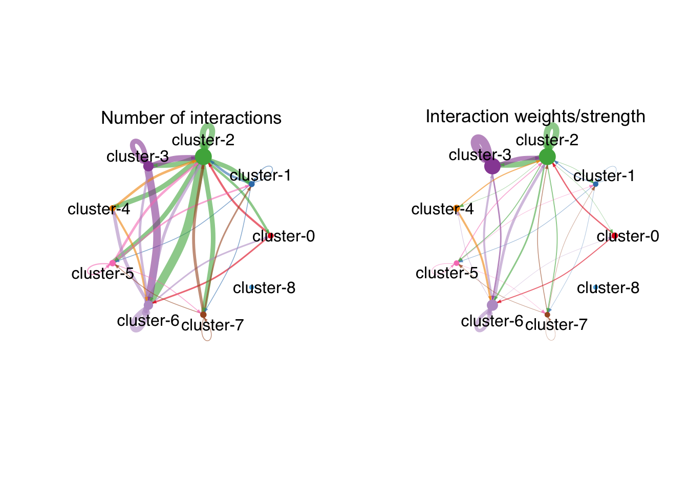
- Visualize pairwise interactions using a heatmap (hint: use the
netVisual_heatmapfunction)
netVisual_heatmap(cellchat, measure = "count", color.heatmap = "Blues")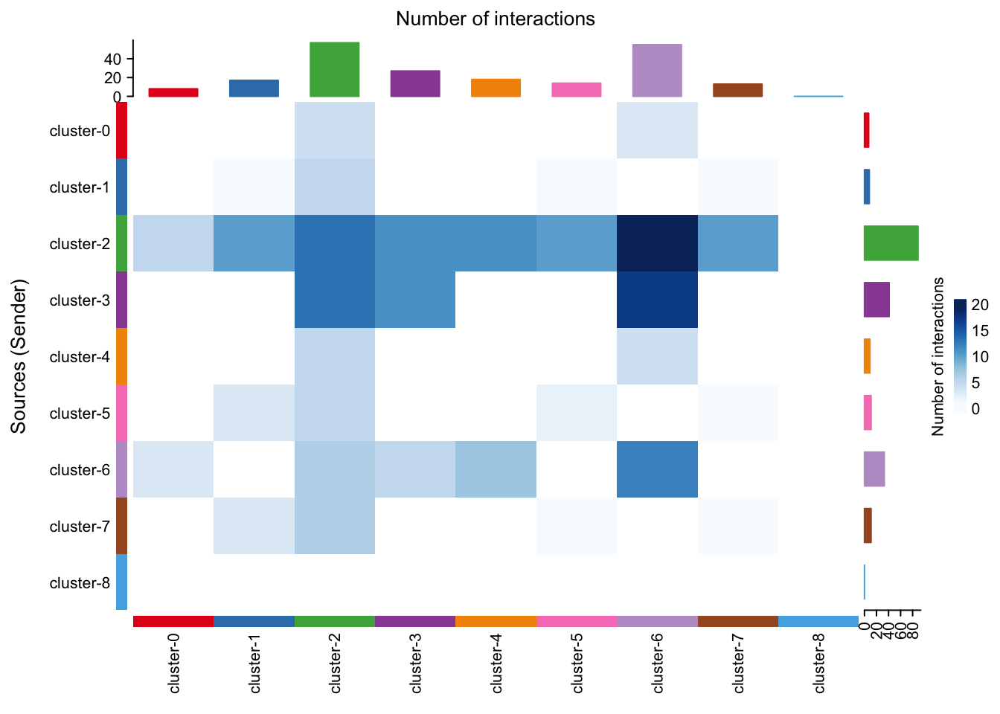
Q7. Which are the clusters with the highest level of interactions? (hint: check out the cellchatnet$count object)
Q8. Which are the top 3 interactions across cluster-3 (Tumor) and cluster-2 (Stroma/Fibroblasts)? (hint: use the subsetCommunication function from CellChat)
Let’s compute the overall activity of CCI at the pathway level, in this case the goal is to summarize the interactions that we have retrieved to ones that pertain to specific intracellular pathways in order to get a sense of what is going on in communicating cells!
cellchat <- computeCommunProbPathway(cellchat)Let’s now see the activity of a specific pathway always using a chord diagram:
pathways.show <- c("FGF")
# Circle plot
par(mfrow=c(1,1), xpd = TRUE)
netVisual_aggregate(cellchat, signaling = pathways.show, layout = "circle")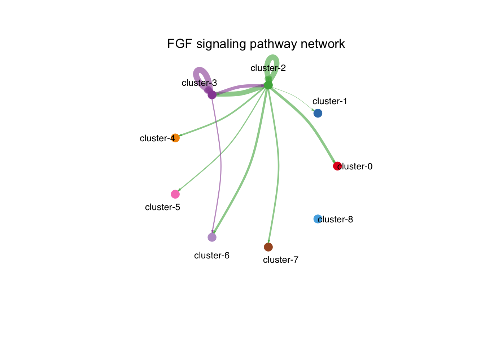
Q9. Plot this in space as well like shown below (hint: use the netVisual_aggregate function)
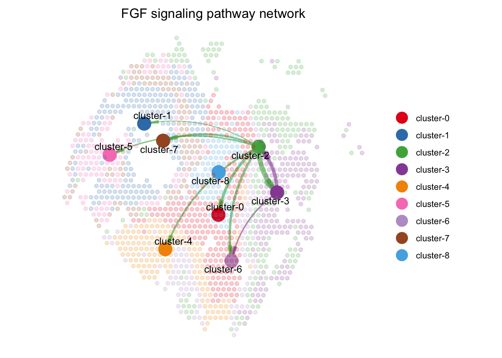
We can additionally plot a “binarized” sender/receiver version of the plot above for a specific pathway:
# Take an input of a ligand-receptor pair and show expression in binary
p1 <- spatialFeaturePlot(cellchat, pairLR.use = "FGF18_FGFR4", point.size = 1, do.binary = TRUE, cutoff = 0.05, enriched.only = F, color.heatmap = "Reds", direction = 1)
p2 <- spatialFeaturePlot(cellchat, pairLR.use = "CXCL9_ACKR1", point.size = 1, do.binary = TRUE, cutoff = 0.05, enriched.only = F, color.heatmap = "Reds", direction = 1)
p1 + p2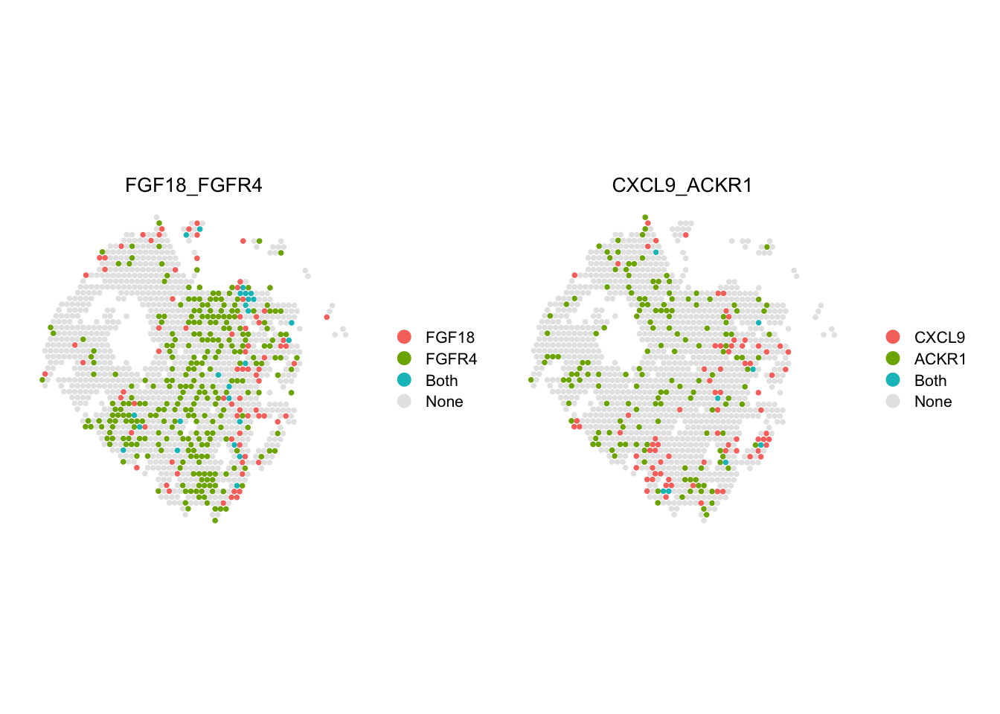
Congratulations! You made it all the way to the end of the workshop! 🥳